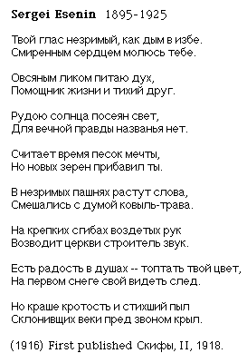

Notes 6
Universes Originally I had though of using the German Weltall. Universe in English has to serve for two words in Russian: [mirozdanie] and [vselennaia].
eurythmy also eurhythmy. The American Heritage Dictionary (633) accepts both spellings and defines it as "A system of rhythmical body movements performed to a recitation of verse or prose." "eurhythmy" (OED, V, 439) "in wider sense of Gr. eurufmia: a. Rythmical order or movement; b. a graceful proportion and carriage of the body." eurythmics "A system of rhythmical bodily movements, esp. dancing, exercises, with musical accompaniment, freq. used for educational purposes" quoted from trans. of M. Jacques-Dalcroze Rythym, Music and Education." Jacques-Dalcroze is listed here and in The New Encyclopædia Britannica (Chicago, 1985), "the Dalcroze system of musical education in which bodily movements are used to represent musical rhythmics... The system was developed about 1905 by Emile Jacques-Dalcroze, a professor of harmony at the Geneva Conservatory, ...(IV, 601). The standard German reference work lists "Eurythmie. 1912 von R. Steiner auf den Grundlage seine Anthroposophie entwickelte Bewegungskunst." (Brockhaus Enzyklopädie, Mannheim, 1986-1994, VI, 673). Steiner wrote extensively about Eurythmy and he himself dates his version of the art to 1912. It is still widely practiced today in Anthroposophical circles and Waldorf schools. Steiner is clear that it is not a dance, but "Visible Speech," movement expressing physically and externally the internal sounds. Bely's refinement, i.e. having the movements take place as the tongue dancing or moving in the mouth as it articulates sounds is perhaps not completely novel. Kozlik (660) cites Steiner as early as October 1918 "Die Worte sind nur eine vom Kehlkopf ausgeführte, von der Luft mitbewirkte Eurythmie." (Der Tod als Lebenswandlung, 180). Bely mentions several times "eurythmy," the art of movement to express sound. His drawings of the tongue and his repeated references to gestures (zhesty) correspond to foundations established by Steiner in his lectures and the actual practice of eurythmy that developed at Dornach, Stuttgart and later at other sites, subsequently described in works such as Eurythmie, and Eurythmie als sichtbare Sprache. Bely mentions several times "eurythmy," the art of movement to express sound. His drawings of the tongue and his repeated references to gestures (zhesty) correspond to foundations established by Steiner in his lectures and the actual practice of eurythmy at Dornach, subsequently described in works such as Eurythmie, and Eurythmie als sichtbare Sprache (1931) trans. Vera and Judy Compton-Burnett as Eurythmy as Visible Speech (London: 1984). As I have found in my research the art of eurythmy is enormously complex and has gone far beyond what Bely could have seen and known by the time of his writing in 1917. I am especially grateful to Herr Michael Leber, Director of the Eurythmeum in Stuttgart and his students for their gracious assistance in introducing me to their art.
philology Nowadays "linguistics"
duplication. I have chosen to replace my original translation "duplicity" with "duplication" to avoid the predominantly negative associations in English for "duplicity or two-facedness." In Russian [dvulihie], this doublefacedness need not be associated with something insincere.
Airia, in "Air." Müller, Lectures (268 ff.) "Airya in Zend means venerable, and is at the same time the name of the people. . . . in the Zend-Avesta the whole extent of the country occupied by the Aryans is likewise called Airya." In Russian we can find in Dal',Tolkovyj slovar', the word aèr [aer] meaning "air." Airia (Airjana) is the land of the Aryans, in the eastern part of ancient Persia called by the Greeks, Areia, or Latin Aria. English uses the adjective Aryan "Applied by some to the great division or family of languages, which include Sanskrit, Zend, Persian, Greek, Latin, Celtic, Teutonic, and Slavonic, with their modern representatives; also called Indo-European, Indo-Germanic, and sometimes Japhetic [i.e. descended from Japheth, one of the sons of Noah]." (OED 1, 672) "Aryan" was in the nineteenth century considered the first language, from which all others developed. Bely associates "air" and "Aryan" while at the same time avoiding the possible confusion with the Russian borrowing for an "aria." Russian [ariya]. In Steiner's description this land will play a key role as one of the original post-Atlantean stages of the development of civilizations.
eurythmists near the cupola Bely lived in Dornach in Rudolf Steiner's Anthroposophical community. Here he could watch (even as one can today) performances of eurythmy. The cupola probably refers to the dome of the Gotheanum itself, the Anthroposophical Temple in Dornach.
